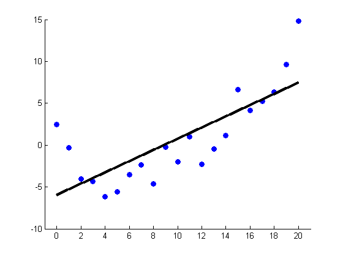
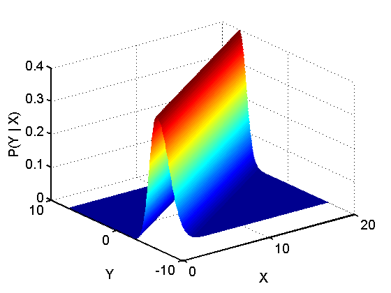

Plot Linear Gaussian CPD p(y|x) = N(Y|a + bx, sigma) where a is
Contents
the offset and b is the slope.
[xtrain, ytrain, xtest, ytestNoisefree, ytest] = polyDataMake('sampling','thibaux');
n = size(xtrain,1);
Xtrain = [ones(n,1) xtrain];
w = Xtrain\ytrain;
ntest = size(xtest,1);
Xtest = [ones(ntest,1) xtest];
ypredTest = Xtest*w;
figure;
scatter(xtrain,ytrain,'b','filled');
hold on;
plot(xtest, ypredTest, 'k', 'linewidth', 3);
hold off
set(gca,'xlim',[-1 21]);

sigma = 1;
a = w(1);
b = w(2);
stepSize = 0.1;
[x,y] = meshgrid(linspace(min(xtest), max(xtest), 300), ...
linspace(min(ypredTest),max(ypredTest),300));
[r,c]=size(x);
func = @(X,Y)normpdf(Y,a + b*X,sigma);
p = func(x(:),y(:));
p = reshape(p, r, c);
fontSize = {'FontSize',14};
figure;
mesh(x,y,p);
shading interp;
lighting phong;
material dull;
xlabel('X',fontSize{:});
ylabel('Y',fontSize{:});
zlabel('P(Y | X)',fontSize{:});
set(gca,fontSize{:},'LineWidth',1.5);
printPmtkFigure('linregWedge2Wedge');
